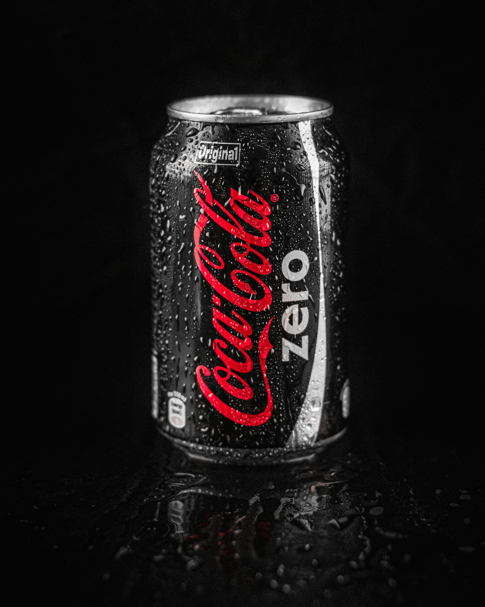
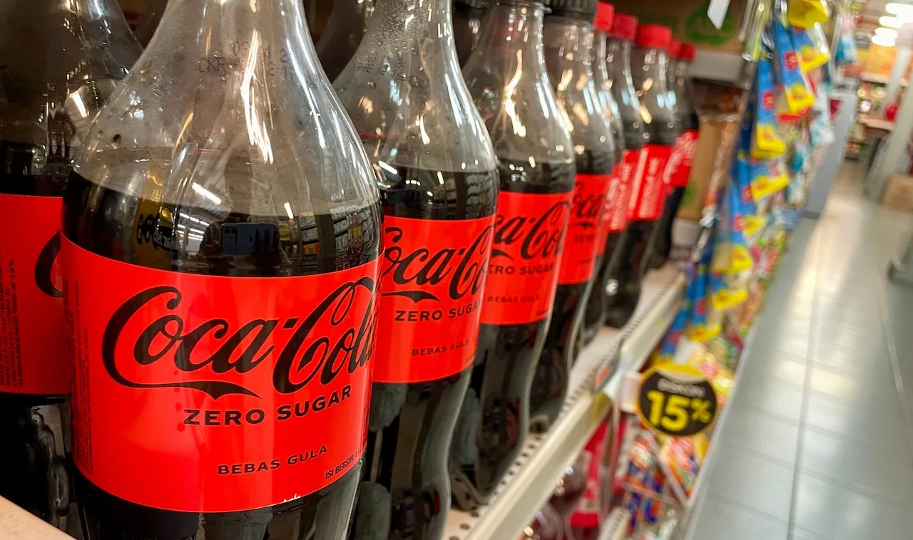

Sabor ?
Muitas pessoas acreditam que o sabor da Coca Cola Zero é artificial ou inferior ao da Coca Cola
original.
Consumidores habituados ao açúcar podem estranhar o sabor mais “amargo” da versão zero em comparação com a original

A Coca Cola Zero pode ser vista como menos “autêntica” do que a versão tradicional.
Embalagem ou Designer ?
A Coca Cola Zero pode ser vista como menos “autêntica” do que a versão tradicional.
Alguns consumidores acreditam que produtos “zero” são marketings disfarçados, sem real melhoria para a
saúde.
Preferência por marcas concorrentes (como Pepsi Black, Guaraná Zero, etc.)

Em algumas regiões, Coca-Cola Zero pode ser mais cara ou difícil de encontrar que a versão normal.